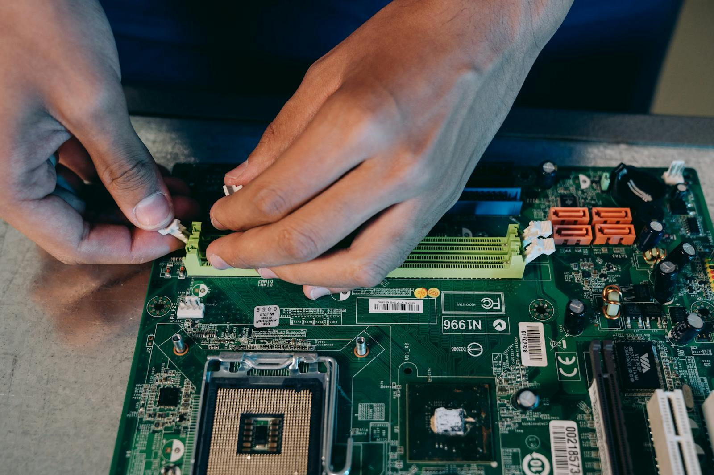

Typische Aufträge
- Leistungsprobleme und Systemfehler beheben
- Geräte für Alltag, Homeoffice oder Gaming aufrüsten
- Daten aus alten oder beschädigten Geräten übernehmen
- Vor Kauf oder Reparatur eine ehrliche Einschätzung bekommen
Leistungsübersicht
Von der klassischen Reparatur bis zur Datenübernahme: Pixel & Parts unterstützt bei Defekten, Leistungsproblemen, Modernisierungen und technischen Rückfragen rund um PC und Laptop.

Bluescreens, Startprobleme, Temperaturthemen, instabile Systeme und defekte Komponenten.
Akku, Tastatur, Display, Ladebuchse, Lüfter, Scharniere und allgemeine Instandsetzung.
SSD statt HDD, mehr RAM, Austausch einzelner Bauteile und sauberer Funktionstest nach dem Umbau.
Windows-Neuinstallation, Treiberpflege, Bereinigung und stabile Grundkonfiguration.
Dateien sichern, Benutzerprofile umziehen und neue Systeme vorbereitet übernehmen.
Einschätzung vor Reparatur, Upgrade oder Neukauf, damit Aufwand und Ergebnis zusammenpassen.